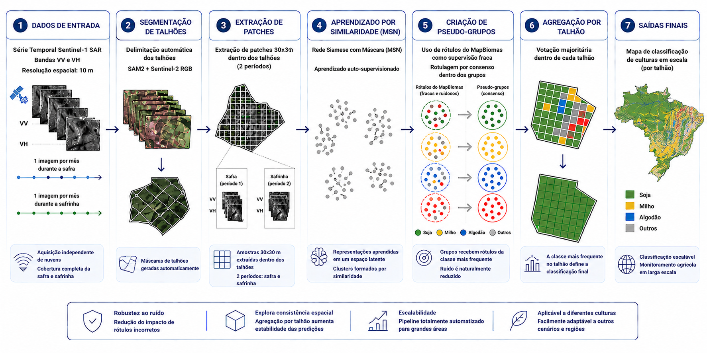
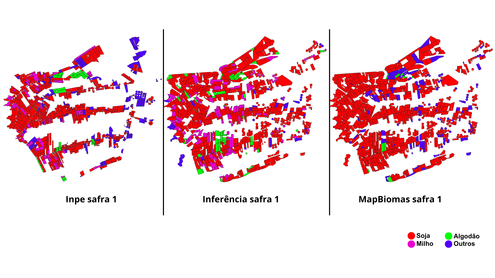
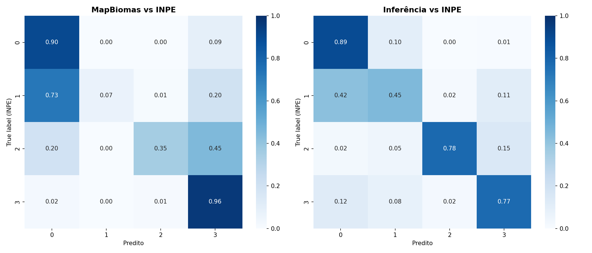
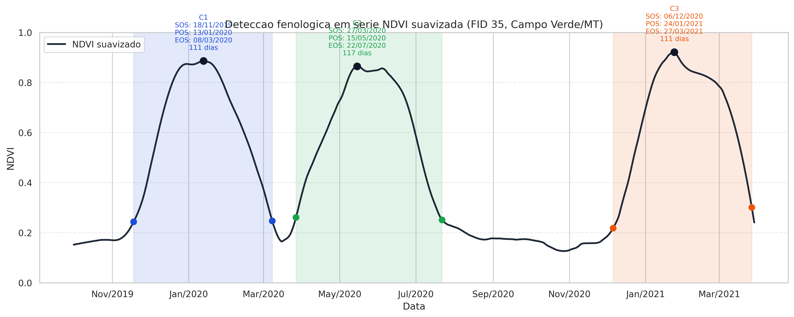
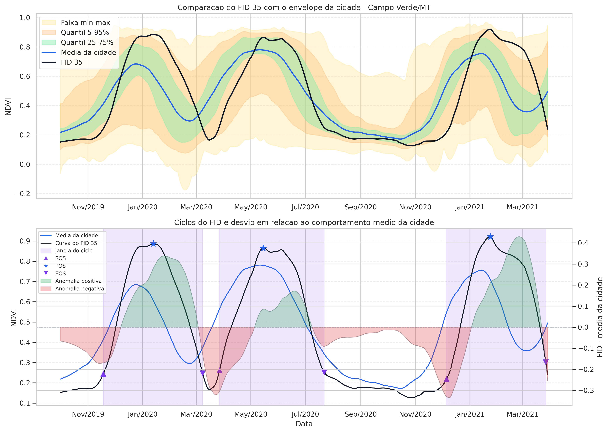
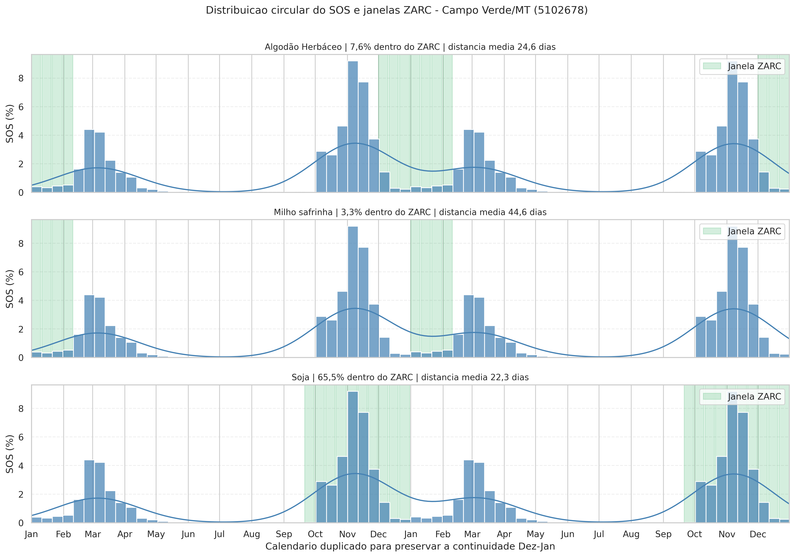
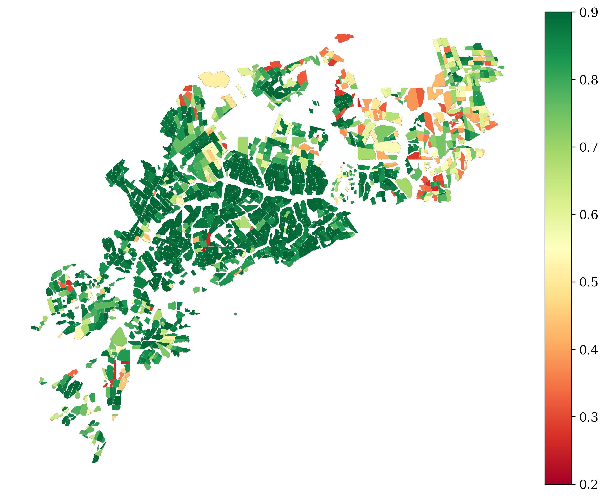

Análise de risco e monitoramento de lavouras por satélite em escala nacional
Bases públicas podem ser anuais ou apresentam defasagem de 1-2 anos
Sem identificação direta e escalável da cultura por talhão e safra
Vistorias tradicionais não escalam para grandes carteiras de clientes
Sinais de risco muitas vezes aparecem tarde demais para ação preventiva
Uma camada de inteligência territorial integrada a múltiplas fontes de dados

Acompanhamento em tempo quase real durante todo o ciclo produtivo
Identificação automática de anomalias e desvios de comportamento
Cobertura de centenas de milhões de hectares sem limite operacional
Navegue pelos talhões da Bahia e explore as classificações de cultura

Visual comparativo entre classificações agrícolas em escala de talhão, apoiando a leitura espacial das diferenças entre AgroIA, MapBiomas e referência.
Comparação de acurácia entre AgroIA e MapBiomas

Enquanto MapBiomas tem acurácia geral superior, AgroIA mantém melhor equilíbrio entre classes. Para carteiras de crédito/seguro diversificadas, a acurácia média por classe é crítica para evitar sub/super-estimação de risco em culturas específicas.
Ciclos vegetativos e janelas de plantio recomendadas
Início da Safra
Pico Vegetativo
Fim da Safra
Janela Recomendada



Sistema de detecção de anomalias e risco

Desenvolvimento dentro do esperado para o período
Alguns sinais de atenção identificados
Indicadores críticos que exigem investigação